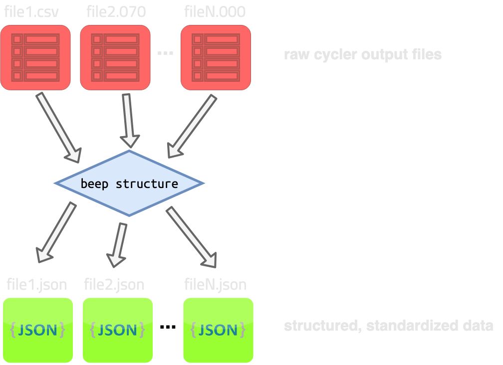

Structure¶
The beep structure command takes in N raw battery cycler files (mostly text or csv) and produces N standardized, structured data json files.

The structured json files can be loaded either with the BEEP python BEEPDatapath interface (see Advanced Structuring) or with subsequent CLI commands such as beep featurize (see CLI - Featurize).
Structuring help dialog¶
Usage: beep structure [OPTIONS] [FILES]...
Structure and/or validate one or more files. Argument is a space-separated
list of files or globs.
Options:
-o, --output-filenames PATH Filenames to write each input filename to.
If not specified, auto-names each file by
appending`-structured` before the file
extension inside the current working dir.
-d, --output-dir DIRECTORY Directory to dump auto-named files to. Only
works if--output-filenames is not specified.
-p, --protocol-parameters-dir DIRECTORY
Directory of a protocol parameters files to
use for auto-structuring. If not specified,
BEEP cannot auto-structure. Use with
--automatic.
-v, --v-range <FLOAT FLOAT>... Lower, upper bounds for voltage range for
structuring. Overridden by auto-structuring
if --automatic.
-r, --resolution INTEGER Resolution for interpolation for
structuring. Overridden by auto-structuring
if --automatic.
-n, --nominal-capacity FLOAT Nominal capacity to use for structuring.
Overridden by auto-structuring if
--automatic.
-f, --full-fast-charge FLOAT Full fast charge threshold to use for
structuring. Overridden by auto-structuring
if --automatic.
-c, --charge-axis TEXT Axis to use for charge step interpolation.
Must be found inside the loaded dataframe.
Can be used with --automatic.
-x, --discharge-axis TEXT Axis to use for discharge step
interpolation. Must be found inside the
loaded dataframe. Can be used with--
automatic.
-b, --s3-bucket TEXT Expands file paths to include those in the
s3 bucket specified. File paths specify s3
keys. Keys can be globbed/wildcarded. Paths
matching local files will be prioritized
over files with identical paths/globs in s3.
Files will be downloaded to CWD.
--automatic If --protocol-parameters-path is specified,
will automatically determine structuring
parameters. Will override all manually set
structuring parameters.
--validation-only Skips structuring, only validates files.
--no-raw Does not save raw cycler data to disk. Saves
disk space, but prevents files from being
partially restructued.
--s3-use-cache Use s3 cache defined with environment
variable BEEP_S3_CACHE instead of
downloading files directly to the CWD.
--help Show this message and exit.
Specifying output locations¶
There are three options for specifying output filenames:
- Specify all output filenames, one for each input file. Should be
json. Use--output-filenames(-o) to specify files, for example:
$: beep structure -o output1.json -o /path/to/output2.json input1.csv input2.csv
# Outputs output1.json in the CWD and output2.json at /path/to/output.json.
- Specify an output directory where auto-named files will be output. Directory should exist. Use
--output-dirto specify.
$: beep structure -d /path/to/output_dir input1.csv input2.csv
# Outputs
# - /path/to/output_dir/input1-structured.json
# - /path/to/output_dir/input2-structured.json
- Automatically named files output in CWD. No options needed.
$: beep structure input1.csv input2.csv
# Outputs in the CWD:
# - ./input1-structured.json
# - ./input2-structured.json
Select files (including from S3)¶
Input files can be named individually or globbed. Input files should be supported by BEEP; see Cycler Data Requirements for more details.
Example 1:
Input files do not need to belong to the same cycler type to work together in one operation.
Example 2:
If you pass the --s3-bucket argument, you can select files or globs based on keys in this bucket. Note you
must have boto3 set up in order to use the S3 files with BEEP.
Example for S3:
Customize structuring parameters¶
You can customize the structuring parameters using these individual variables:
--v-range--resolution--nominal-capacity--full-fast-charge--charge-axis--discharge-axis
Example:
$: beep structure * --v-range 0.5 0.9 --resolution 200 --nominal-capacity 1.1 --full-fast-charge 0.9
Alternatively, you can use automatic structuring by passing the --automatic flag. While this flag will by default
use a general-purpose set of files for determining structuring parameters, you can specifcy your own parameters for
autostructuring by passing both --automatic and --protocol-parameters-dir. For example
Failing or invalid files¶
If any of your files fail or are invalid, you can inspect the full traceback in the status json if you have --output-status-json
specified in the base beep command.
If this does not provide enough information, you can use the inspect command to examine your file, if it can be loaded.